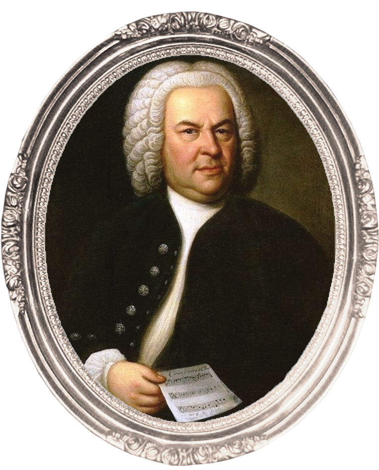
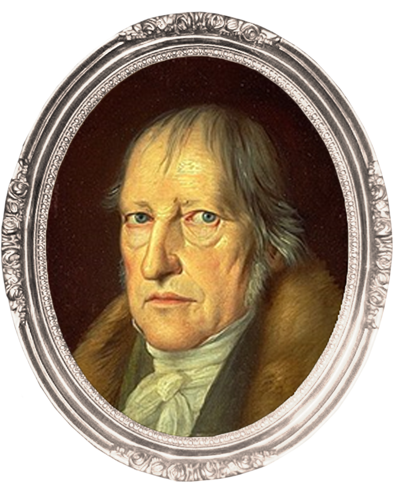
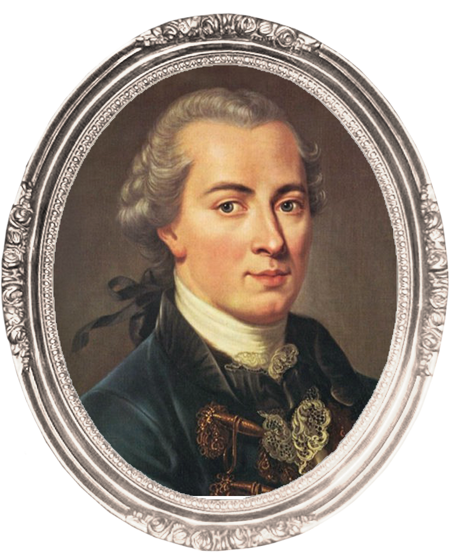

BAROQUE
1600 ~ 1750

Johann Sebastian Bach
(1685 ~ 1750)
독일의 작곡가였던 바흐는 교회 성기사와 오케스트라, 듀오 악기를 위한 종교적이거나 세속적인 음악을 창작했고, 그의 작품은 바로크 시대의 종말과 궁극적인 성숙을 동시에 가져왔다. 그는 바로크 시대의 최후에 위치하는 대가로서, 일반적인 작품은 독일 음악의 전통에 깊이 뿌리박고 있을 뿐 아니라, 그 위에 이탈리아나 프랑스의 양식을 채택하고 그것들을 융합하여 독자적 개성적인 음악을 창조하였다.


Hegel G. W. Friedrich
(1770 ~ 1831)
관념철학을 대표하는 독일의 철학자인 헤겔, 칸트의 이념과 현실의 이원론을 극복하여 일원화하고, 정신이 변증법적 과정을 경유해서 자연, 역사, 사회, 국가 등의 현실이 되어 자기 발전을 해가는 체계를 종합 정리하였다. 헤겔은 자신의 변증법적 생각으로 절대정신을 추구했던 사상 때문에 바흐가 현실과 무관한 순수의 영역인 신을 다룬 점을 부정적으로 바라보았다.

Immanuel Kant
(1724 ~ 1804)
근대 계몽주의를 정점에 올려놓았고 독일 관념철학의 기반을 확립한 칸트는, 21세기의 철학에까지 영향을 준 새롭고도 폭넓은 철학적 관점을 창조했다. 또한 인식론을 다룬 중요한 저서를 출간했고, 종교와 법, 역사에 관해서도 중요한 책을 썼다. 그의 저서들은 이후 철학사에도 큰 영향을 주었다.
PHILOSOPHY IN MUSIC